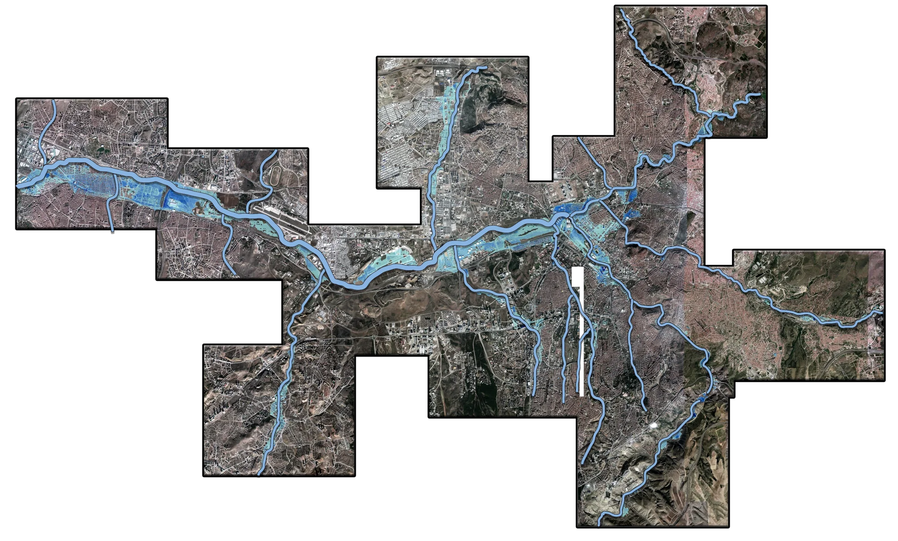
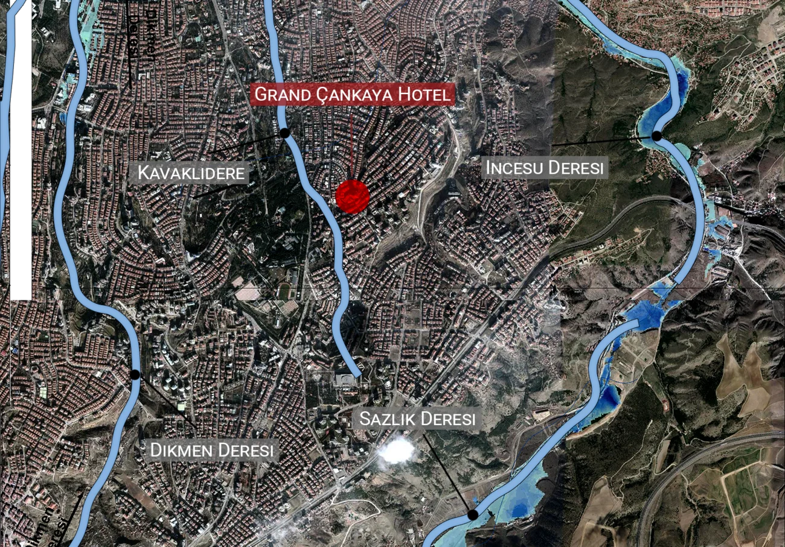
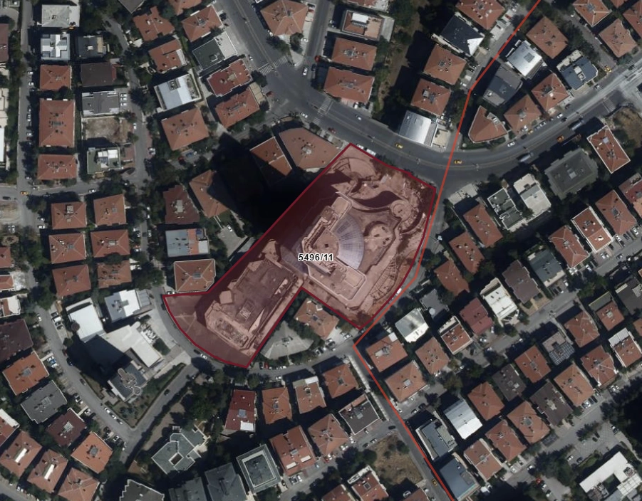
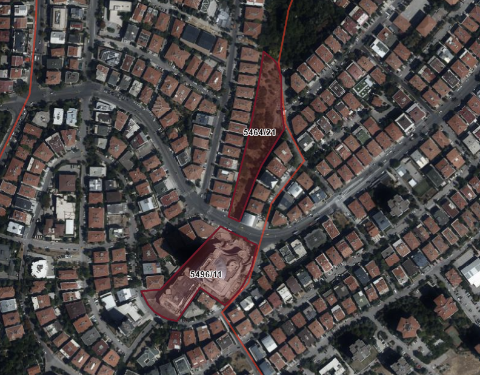
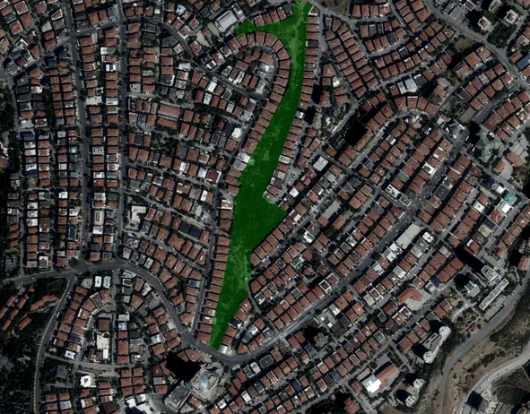

Ankara's waterways, which are mostly covered with soil and concrete, enable contamination, soil and materials to flow into each other and across the city. By mapping these waterways, the hydrological connections near the Grand Çankaya Hotel site are revealed.


Changing the scale from the city to the site reveals that there are four waterways situated around the Grand Çankaya Hotel: Dikmen Deresi, İncesu Deresi, Sazlık Deresi, and Kavaklıdere. Kavaklıdere is the nearest one, flowing almost tangently to the hotel site.

The hotel site, in which construction started in 1984, occupies parcel 11 of block 5496 on the corner of Uğur Mumcu Avenue and Kız Kulesi Street, covering approximately 11,313m².

Initially, a six-story underground car park was planned on an adjacent plot, parcel 21 of block 5464, an 8,170 m² site situated directly above Papazın Bağı.

The car park's construction was halted by the court in 2005. However, 22 trees had already been illegally cut, and the ongoing hotel construction had already disturbed the area's soil and subsurface water flows.